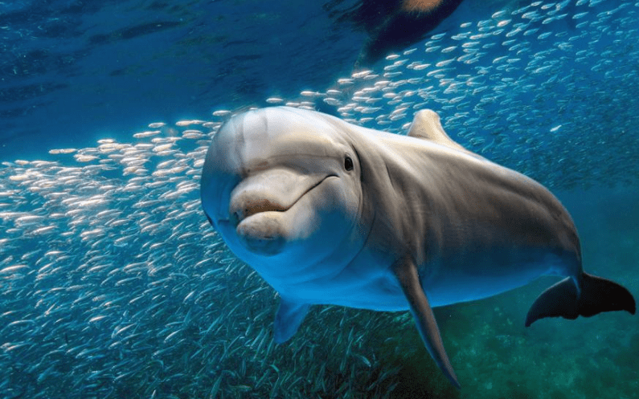

Delfin
(Delphinidae)

Hábitat
El delfín común es una especie oceánica que, se encuentra distribuida en las aguas tropicales, templadas y frías del océano Atlántico y Pacífico.
Caracteristicas
-
Los cuellos de los delfines no son flexibles.
-
Sus extremidades se convirtieron en aletas y no tienen cartílago en las orejas
-
Tienen una aleta caudal y cabezas bulbosas.
-
Orbitas oculares pequeñas
-
hocicos largos y dientes cónicos.